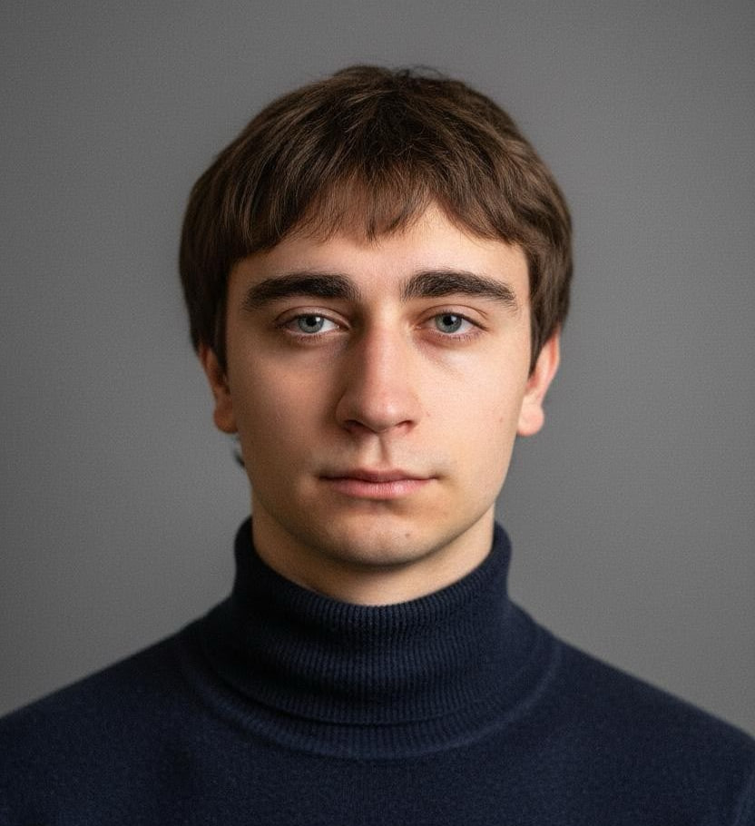

Hallo, ich binHello, I'm Bohdan Krasokha
Ich suche eine Ausbildung zum Fachinformatiker für Systemintegration in Hamburg.Looking for an Ausbildung as a Fachinformatiker für Systemintegration in Hamburg.

Über michBiography
Ich bin 18 Jahre alt, technikbegeistert und habe schon immer gern digital gestaltet. Angefangen hat alles in meiner Kindheit mit Videobearbeitung in After Effects und Alight Motion. Daraus entwickelte sich ganz von selbst eine große Faszination für IT, Systemintegration und die Grundlagen des Programmierens. Ich arbeite gern kreativ und bin stolz darauf, dass ich neue Software und Technologien schnell lerne.I am an 18-year-old tech enthusiast with a lifelong passion for digital creation. My journey began in childhood with video editing in After Effects and Alight Motion, which naturally evolved into a deep fascination with IT, system integration, and the fundamentals of programming. I thrive on creativity and pride myself on my ability to quickly master new software and technologies.
So arbeite ichHow I work
Ich habe starke Grundlagen in exakten Fächern wie Algebra und Geometrie, ein gutes räumliches Vorstellungsvermögen und ein starkes Gedächtnis. Zu meinen aktuellen Tools gehören VS Code, GitHub, HTML und CSS, und ich erweitere meine Kenntnisse ständig. Meine Arbeitsweise ist einfach: größte Sorgfalt im Detail und ein methodisches Vorgehen, Schritt für Schritt. Ich schreibe nicht nur Code oder konfiguriere Systeme, sondern will hochwertige, einzigartige und sorgfältig ausgearbeitete Ergebnisse liefern.Backed by a strong foundation in exact sciences like algebra and geometry, I possess a sharp spatial imagination and a strong memory. My current tech stack includes VS Code, GitHub, HTML, and CSS, and I am constantly expanding my skill set. My work philosophy is simple: extreme attention to detail and a methodical, step-by-step approach to project construction. I don't just write code or configure systems; my goal is to deliver high-quality, unique, and polished results.
Aktuelle ToolsCurrent stack
- VS Code
- GitHub
- HTML
- CSS
VideobearbeitungVideo editing
- After Effects
- Alight Motion
Mein ZielMy goal
Ich lebe in Hamburg und spreche Deutsch auf Niveau B1. Mein wichtigstes Ziel ist eine Ausbildung zum Fachinformatiker für Systemintegration. Ich bin hoch motiviert, offen für anspruchsvolle Aufgaben und arbeite ständig daran, mich zu einem erstklassigen Fachmann zu entwickeln. Ich bin bereit für die Zukunft, und ich bin bereit, sie mitzugestalten.Currently based in Hamburg, with German at B1 level, my main objective is to start an Ausbildung as a Fachinformatiker für Systemintegration. I am highly driven, open to complex challenges, and constantly pushing myself to grow into a top-tier professional. I am ready for the future, and I am ready to build it.
Verbindung herstellenLet's Connect
Ich bin immer offen für neue Möglichkeiten, Herausforderungen und interessante Gespräche.I am always open to new opportunities, challenges, and interesting conversations.
- E-MailEmail
- krasokhade@gmail.com
- GitHub
- github.com/skv1ce